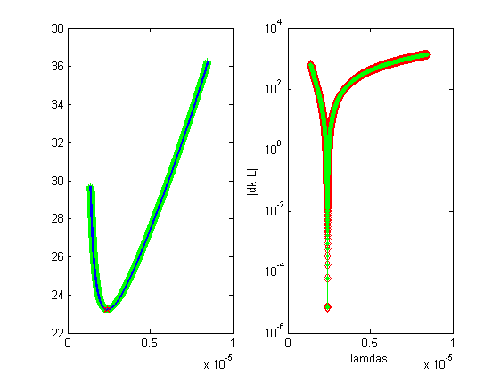
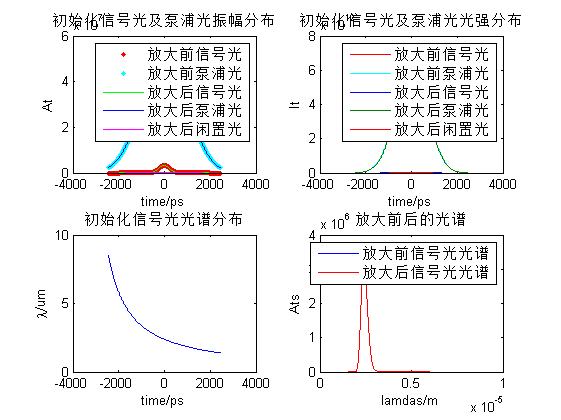

Contents
%%%%%%%%%%%%%%%%%%%%%%%%% % %
预处理
1屏幕数据初始化
close all clc tic % 2单位定义 c=3e8; fs=1e-15; ps=1e-12; nJ=1e-9; uj=1e-6; mJ=1e-3; mm=1e-3; cm=1e-2; epislon=8.85e-12; % 3初始化 es=69.5*uj; ep=300/4*mJ; dias=3*mm; diap=3*mm; ms=1; mp=1; lamdas0=2.4e-6; lamdap=1.053e-6; material='BBO'; matchtype='ooe'; type='o'; alpha=3.0648; L=10*mm; N=2^13; dz=L/N; % 4初始化三波 tao_ftl=30*fs; tao_ps=400*ps; tao_pp=1625*ps; T=3*tao_pp; t=linspace(-T/2,T/2,N); dt=t(2)-t(1); chirp_s=-sqrt((tao_ps/tao_ftl)^2-1); tao_gs=tao_ps./sqrt(2*log(2)); ws0=2*pi*c/lamdas0; ws=ws0-2*chirp_s.*t/tao_gs^2; chirp_p=0; lamdas=2*pi*c./ws; lamdai0=1./(1./lamdap-1./lamdas0); lamdai=1./(1./lamdap-1./lamdas); ns0=sellmeier(lamdas0,material,type); ni0=sellmeier(lamdai0,material,type); ns=sellmeier(lamdas,material,type); max(ns) ni=sellmeier(lamdai,material,type); np=sellmeier(lamdap,material,type); [Ats,intenses]=pulse_generator(es,dias,'gauss',tao_ps,ns0,chirp_s,t,ms); [Atp,intensep]=pulse_generator(ep,diap,'supergauss',tao_pp,np,chirp_p,t,mp); % [Ats,t2,intenses]=SuperGauss2(energy_s,diameter,ns02,tao_ps,Cs,m_s,T,N); % [Atp,t2,intensep]=SuperGauss2(energy_p,diameter,np02,tao_ps,Cs,m_p,T,N); subplot(221) plot(t*1e12,abs(Ats),'r.',t*1e12,Atp,'c.') xlabel('time/ps') ylabel('At') title('初始化信号光及泵浦光振幅分布') legend('信号光','泵浦光') subplot(222) plot(t*1e12,intenses,'r',t*1e12,intensep,'c') xlabel('time/ps') ylabel('It') title('初始化信号光及泵浦光光强分布') legend('信号光','泵浦光') subplot(223) plot(t*1e12,lamdas*1e6) xlabel('time/ps') ylabel('\lambda/um') title('初始化信号光光谱分布') subplot(224) plot(lamdas,abs(Ats),'b') ylabel('Ats') xlabel('\lambda/um') title('初始信号光振幅分布') % 5相位匹配角 theta=pma_theta(N,alpha,lamdas0,lamdap,material,matchtype); theta2=theta_calculate(alpha,lamdas,lamdap,material); theta3=pma_theta(N,alpha,lamdas,lamdap,material,matchtype); % np=sellmeier(lamdap,material,'t',theta); wi=2*pi*c./lamdai; wp=2*pi*c./lamdap; figure(2) subplot(121) plot(lamdas,theta2,'g*') hold on plot(lamdas,theta3,'Linewidth',2) Ati=zeros(1,length(Ats)); hold on plot(lamdas0,theta,'rp') % deff=d_eff(material,matchtype,theta,phi); % plot(lamdas,deff) % deff=abs(deff); deff=2.00e-12; subplot(122) dk2=d_k(alpha,theta,lamdas,lamdap,material,matchtype); dk3=deltak_calculate(alpha,theta,lamdas,lamdap,material); semilogy(lamdas,abs(dk2*L),'rd',lamdas,abs(dk3*L),'g.-') xlabel('lamdas') ylabel('|dk L|') dk=zeros(1,length(lamdas)); for i=1:N/32 z=(i-.5)*L/(N/32); [Ats,Ati,Atp]=rk45(Ats,Ati,Atp,ws,wi,wp,ns,ni,np,dk2,deff,z,dz); end figure(1) subplot(221) hold on plot(t*1e12,abs(Ats),'g-',t*1e12,abs(Atp),'b-',t*1e12,abs(Ati),'m-') legend('放大前信号光','放大前泵浦光','放大后信号光','放大后泵浦光','放大后闲置光') intenses2=0.5*c*epislon*ns.*abs(Ats).^2; intensei2=0.5*c*epislon*ns.*abs(Ati).^2; intensep2=0.5*c*epislon*ns.*abs(Atp).^2; subplot(222) hold on plot(t*1e12,intenses2,t*1e12,intensep2,t*1e12,intensei2) legend('放大前信号光','放大前泵浦光','放大后信号光','放大后泵浦光','放大后闲置光') subplot(224) hold on plot(lamdas,abs(Ats),'r') xlabel('lamdas/m') ylabel('Ats') title('放大前后的光谱') legend('放大前信号光光谱','放大后信号光光谱') % es_out=sum(0.5*c*epislon*ns.*abs(Ats).^2*dt)*pi*(dias/2).^2; ei_out=sum(0.5*c*epislon*ni.*abs(Ati).^2*dt)*pi*(dias/2).^2; ep_out=sum(0.5*c*epislon*np.*abs(Atp).^2*dt)*pi*(diap/2).^2; time=toc; fprintf('放大后信号光能量:%f mJ\n',es_out*1e3); fprintf('放大后闲置光能量:%f mJ\n',ei_out*1e3); fprintf('放大后泵浦光能量:%f mJ\n',ep_out*1e3); fprintf('非共线角:%2.2f 度\n',alpha); fprintf('相位匹配角:%2.2f 度\n',theta); fprintf('计算耗时%f s\n',time);
ans =
1.6490
放大后信号光能量:0.069665 mJ
放大后闲置光能量:0.000221 mJ
放大后泵浦光能量:74.999607 mJ
非共线角:3.06 度
相位匹配角:23.24 度
计算耗时1.344372 s
 